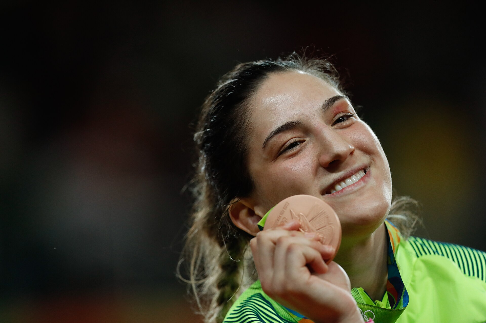

Poucos atletas brasileiros conseguiram permanecer durante tanto tempo entre os melhores do mundo quanto Mayra Aguiar. Nascida em Porto Alegre, no Rio Grande do Sul, em 3 de agosto de 1991, a judoca atravessou diferentes gerações da modalidade, disputou cinco edições dos Jogos Olímpicos.
Mayra chegou à elite ainda adolescente. Aos 15 anos, antes mesmo de ter a faixa preta, conquistou a medalha de prata nos Jogos Pan-Americanos do Rio de Janeiro, em 2007. Um ano depois já estava nos Jogos Olímpicos de Pequim, iniciando uma trajetória olímpica que se estenderia até Paris 2024.
Entre o surgimento precoce e a despedida dos tatames, ela passou por lesões, mudanças de categoria, grandes rivalidades e longos períodos de recuperação. Ao mesmo tempo, acumulou conquistas suficientes para ocupar um lugar central na história do judô brasileiro e de sua tradição olímpica.
O começo da trajetória
Mayra começou no judô aos seis anos. Aos 11, passou a treinar na Sogipa, tradicional clube de Porto Alegre que se transformaria em sua principal casa esportiva durante a carreira. A própria atleta destacou a importância da instituição quando anunciou sua aposentadoria, recordando a longa relação construída desde a infância.
O salto para o cenário internacional aconteceu rapidamente. A prata no Pan-Americano do Rio de Janeiro, em 2007, colocou a adolescente brasileira diante de adversárias muito mais experientes. No ano seguinte, Mayra disputou Pequim 2008 na categoria até 70 kg. O resultado olímpico ainda não foi expressivo, mas a participação aos 17 anos representava o início de uma sequência extraordinária de cinco Olimpíadas.
Posteriormente, Mayra passou para a categoria meio-pesado, até 78 kg, na qual construiria os maiores resultados de sua carreira. Antes mesmo da consolidação definitiva entre as adultas, ela já havia conquistado quatro medalhas em Mundiais Júnior, incluindo um ouro.
A primeira medalha em Mundial adulto
A evolução apareceu de maneira definitiva em 2010. Mayra conquistou a prata no Campeonato Mundial de Tóquio, primeiro de uma série de pódios no principal torneio anual do judô.
Em 2011, no Mundial de Paris, voltou ao pódio, desta vez com o bronze. Ela chegaria, portanto, aos Jogos Olímpicos de Londres em 2012 já estabelecida entre as principais atletas da categoria até 78 kg.
A primeira medalha olímpica
Foi em Londres que Mayra conquistou sua primeira medalha nos Jogos Olímpicos. O bronze de 2012 iniciou uma sequência que se tornaria uma das marcas de sua carreira.
A medalha representava uma mudança de patamar. A jovem que havia estreado nos Jogos em Pequim agora estava entre as melhores judocas do planeta e iniciava um período no qual praticamente todos os ciclos olímpicos seriam acompanhados por grandes resultados internacionais.
No ano seguinte, Mayra voltou ao pódio mundial, conquistando o bronze no Mundial do Rio de Janeiro de 2013. Já eram três medalhas individuais em Mundiais adultos antes de ela atingir seu primeiro título mundial.
O primeiro título mundial em 2014
O Campeonato Mundial de Chelyabinsk, na Rússia, produziu um dos momentos mais importantes da carreira da gaúcha.
Na semifinal, Mayra enfrentou a norte-americana Kayla Harrison, então campeã olímpica. A brasileira venceu e garantiu lugar na decisão. Na final, superou a francesa Audrey Tcheumeo por waza-ari e conquistou seu primeiro título mundial na categoria até 78 kg.
O ouro confirmou definitivamente como uma das referências internacionais da categoria. Não era mais apenas uma medalhista olímpica ou uma atleta capaz de chegar ao pódio mundial: ela havia alcançado o topo do judô.
Medalha diante da torcida brasileira
Os Jogos Olímpicos do Rio de Janeiro colocaram Mayra novamente entre as principais esperanças de medalha do Brasil.
Competindo em casa, ela conquistou seu segundo bronze olímpico consecutivo. Dessa forma, repetiu o resultado obtido quatro anos antes em Londres e manteve uma sequência de pódios que ganharia dimensão ainda maior no ciclo seguinte.
O segundo título mundial veio pouco depois.
Em 2017, no Mundial de Budapeste, Mayra chegou novamente à decisão dos 78 kg. Na final, derrotou a japonesa Mami Umeki por waza-ari no golden score e tornou-se bicampeã mundial. Antes disso, havia passado pela também japonesa Ruika Sato na semifinal.
A conquista evidenciava uma das características mais impressionantes de sua trajetória: a capacidade de continuar entre as melhores durante diferentes ciclos, apesar do desgaste provocado por anos de treinamento e competição no mais alto nível.
A histórica terceira medalha olímpica
O ciclo para Tóquio foi especialmente difícil em razão dos problemas físicos enfrentados pela brasileira. Ainda assim, Mayra conseguiu chegar novamente ao pódio olímpico.
Nos Jogos, disputados em 2021, conquistou o terceiro bronze consecutivo. Assim, passou a ter medalhas em Londres 2012, Rio 2016 e Tóquio 2020.
Naquele momento, Mayra tornou-se a primeira mulher brasileira a conquistar três medalhas olímpicas em provas individuais. O feito reforçou a dimensão de uma trajetória que já atravessava mais de uma década no alto rendimento internacional.
Tricampeonato mundial
Quando parecia que o auge da carreira já estava no passado, Mayra produziu mais um de seus maiores feitos.
No Mundial de Tashkent, no Uzbequistão, em 2022, conquistou novamente o ouro na categoria até 78 kg. Com isso, tornou-se a única brasileira, entre homens e mulheres, a conquistar três títulos mundiais individuais de judô. A Confederação Brasileira de Judô registra os ouros de 2014, 2017 e 2022 e sete pódios individuais em Campeonatos Mundiais Sênior.
O tricampeonato aos 31 anos também demonstrou sua longevidade competitiva. Entre sua primeira medalha mundial adulta, em 2010, e o terceiro ouro, em 2022, passaram-se 12 anos.
Principais conquistas:
- Três medalhas olímpicas de bronze: Londres 2012, Rio 2016 e Tóquio 2020
- Três títulos mundiais individuais: 2014, 2017 e 2022
- Sete medalhas individuais em Campeonatos Mundiais Sênior: três ouros, uma prata e três bronzes
- Quatro medalhas em Mundiais Júnior, incluindo um ouro
- Quatro medalhas nos Jogos Pan-Americanos, incluindo o ouro em Lima 2019
- Quatro medalhas no World Masters, duas delas de ouro
- Cinco participações olímpicas: Pequim 2008, Londres 2012, Rio 2016, Tóquio 2020 e Paris 2024
A despedida olímpica
Depois do tricampeonato mundial, Mayra passou a administrar cada vez mais as limitações físicas. O ciclo para Paris foi marcado por menos competições e pela necessidade de preservar o corpo para tentar disputar uma quinta Olimpíada.
Ela conseguiu chegar aos Jogos de Paris 2024, algo que por si só ampliou sua longevidade olímpica. Na competição individual dos 78 kg, porém, foi eliminada na estreia pela italiana Alice Bellandi, que terminaria os Jogos como campeã olímpica.
Mayra deixou Paris sem a quarta medalha consecutiva. Ela retornou ao Brasil e não participou da campanha que terminou com o bronze brasileiro na disputa por equipes.
Foi a última participação competitiva de uma trajetória internacional iniciada quando ela ainda era adolescente.
A aposentadoria
Em 26 de dezembro de 2024, aos 33 anos, Mayra anunciou oficialmente o encerramento da carreira no alto rendimento. A Confederação Brasileira de Judô publicou uma homenagem à atleta no mesmo dia, destacando seu histórico olímpico e mundial.
A decisão encerrou uma trajetória iniciada no judô aos seis anos e que levou a brasileira a cinco edições dos Jogos Olímpicos.
Mais do que o número de medalhas, sua carreira ficou marcada pela capacidade de voltar ao alto nível depois de períodos de lesões e recuperação. O intervalo de 12 anos entre a primeira medalha mundial adulta e o terceiro título mundial mostra uma longevidade incomum em uma modalidade de enorme exigência física.
Entre os grandes nomes do esporte brasileiro
A dimensão da carreira de Mayra aparece principalmente quando seus resultados são colocados em perspectiva.
Ela pertence a uma geração fundamental para a consolidação do judô como uma das modalidades mais constantes do Brasil em grandes eventos internacionais. Sua trajetória atravessou o período de crescimento de outros medalhistas e campeões brasileiros e ajudou a manter o país entre as forças relevantes da modalidade.
O fato de ter conquistado medalhas olímpicas também mostra que seu sucesso não esteve restrito a uma única fase da carreira. Mayra conseguiu se reinventar, administrar problemas físicos e continuar competitiva diante de adversárias de diferentes gerações.
O legado no judô brasileiro
Mayra Aguiar encerrou a carreira sem conquistar o ouro olímpico, mas isso não diminui o tamanho de sua história. A regularidade em Jogos e Mundiais colocou a gaúcha em um patamar reservado a poucos atletas brasileiros.
Da adolescente que ganhou a prata no Pan de 2007 à tricampeã mundial que chegou a Paris 2024 para sua quinta Olimpíada, foram quase duas décadas convivendo com a elite internacional.
Quando saiu definitivamente dos tatames, deixou um currículo com três bronzes olímpicos, três títulos mundiais e uma sucessão de resultados que ajudam a contar parte importante da evolução do judô brasileiro no século XXI.
Mayra não construiu sua trajetória em um único torneio ou em uma temporada perfeita. Seu legado nasceu justamente da permanência: competir, vencer, se recuperar e voltar ao topo repetidas vezes. É essa combinação de longevidade, títulos mundiais e presença olímpica que mantém seu nome entre as maiores referências da história do esporte brasileiro.